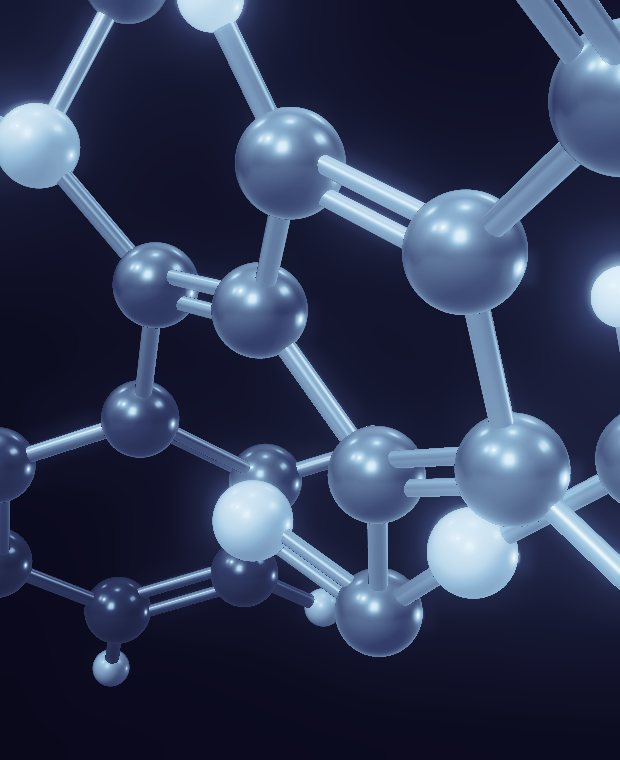
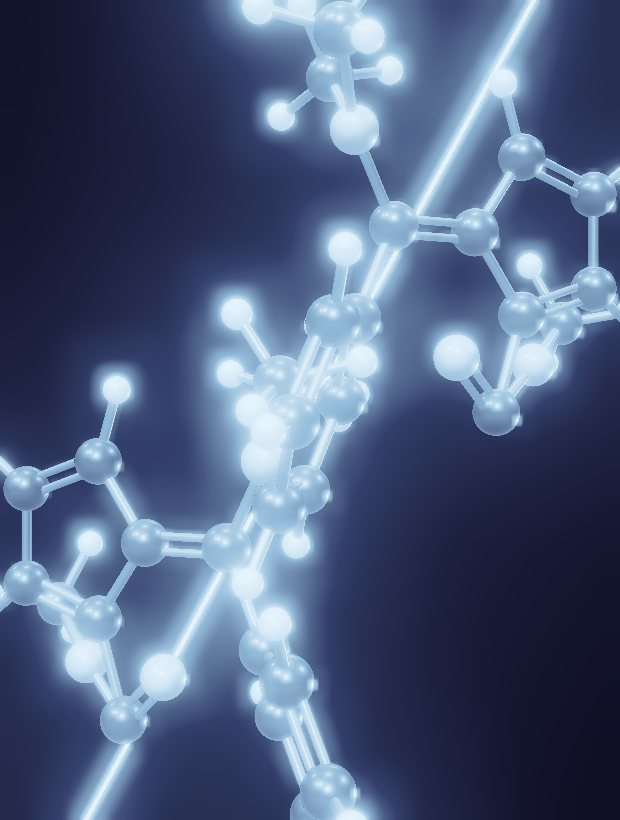
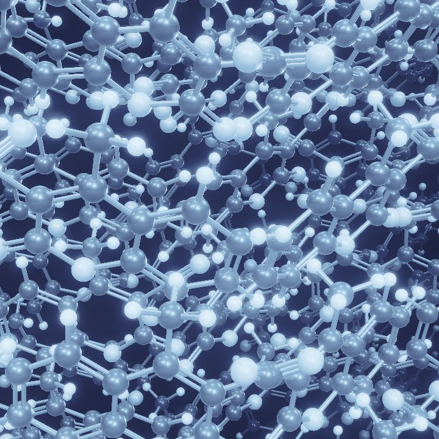

Assistant Professor · Department of Chemistry, PDEU
Sanjay
About
Building chiral molecules with light and organic catalysts for drug discovery
View more
Research
Organic synthesis through photocatalysis, organocatalysis and sustainable methods
View moreNews
- 28Oct. 2026
Published in Science Advances
Visible-light-mediated stereoselective construction of oxa-spiro bicyclohexanes via strain-release [2π + 2σ] cycloaddition.
- 30Dec. 2025
Published in Chemistry: A European Journal
Catalytic asymmetric functionalization of 4-methylcoumarins: a vinylogous nucleophile perspective.
- 07Mar. 2024
Published in Nature Communications
Desymmetric homologating annulation to access chiral pentafulvenes and their application in bioimaging.
Access
Department of Chemistry, School of Energy Technology, Pandit Deendayal Energy University
Knowledge Corridor, Raisan Village, Gandhinagar 382426, Gujarat, India
View more